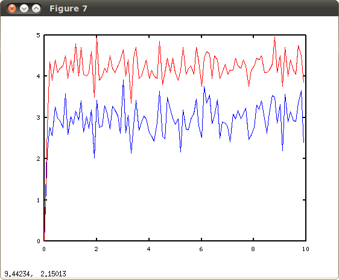
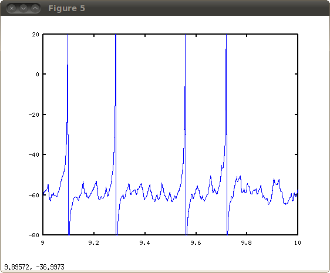

This is the readme for the code for the paper: London M, Roth A, Beeren L, Hausser M, Latham PE (2010) Sensitivity to perturbations in vivo implies high noise and suggests rate coding in cortex. Nature 466:123-7 The network code was supplied by Peter Latham and updated by Tom Morse for compiling in a modern linux (tested with g++ 4.4.3) by simply typing "make". You can follow built-in help by running the executable ./theta1d without any arguments. To run you can create a sample input file by typing: ./theta1d -s > sample_inputfile.txt You can then edit sample_inputfile.txt as desired and then type ./theta1d sample_inputfile.txt to run the model. The provided sample takes 10 seconds to run and should produce graphs such as under matlab/octave commands: For population averaged rate for excitatory (blue) and inhibitory cells (red): load arate; figure plot(arate(:,1),arate(:,2)) hold on plot(arate(:,1),arate(:,3),'r')  For the last second of voltage activity of a selected neuron: load v; figure plot(v(9000:10000,1),v(9000:10000,2)) 